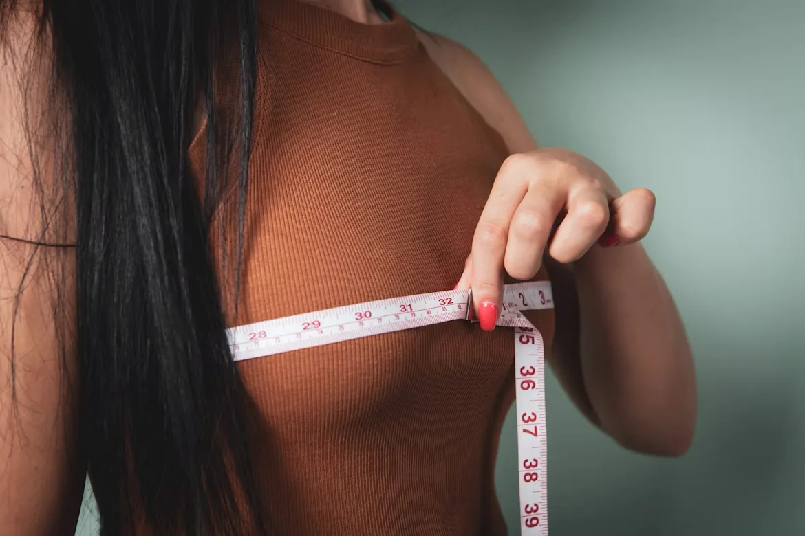
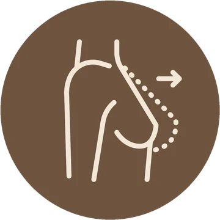
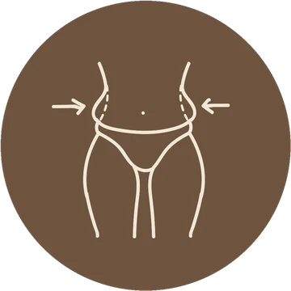

Beleza, naturalidade
e harmonia.
Cada cirurgia começa em uma escuta atenta — e termina em um resultado que parece não ter sido feito.

A beleza que respeita sua essência.

Dra. Ana Lídia Meloncini
Cirurgiã plástica com foco em contorno corporal e cirurgia mamária. O trabalho parte de um princípio simples: resultado natural, proporcional ao corpo e fiel à identidade de cada paciente.
Atendimento direto e objetivo — cada paciente entende o procedimento, os cuidados e o que esperar antes de qualquer decisão.
Formação
Título de Especialista em Cirurgia Plástica.
Abordagem
Escuta, informação e um plano claro em cada etapa.
Registro
CRM 94.951 · RQE 93.868
Especialidades em mama e corpo
Cada cirurgia é desenhada a partir do seu corpo — não de um molde. Conheça as duas áreas que definem a prática da dra. Ana Lídia.


Cirurgia mamária
Aumento, elevação ou redução: a mama é planejada em proporção ao corpo, com cicatrizes posicionadas para envelhecer bem.
Aumento com prótese
Volume harmônico, definido a partir do seu biotipo e do seu desejo — não de um catálogo.
Mastopexia
Elevação da mama com remoção do excesso de pele e novo posicionamento da aréola.
Redução mamária
Alívio de peso e desconforto, com remodelagem proporcional e discreta.

Lipoescultura & abdômen
Os dois procedimentos que mais transformam a silhueta — frequentemente planejados juntos, em um único ato cirúrgico.
Lipoescultura
Aspiração de gordura localizada e escultura das curvas, respeitando a proporção entre cintura, quadril e dorso.
Abdominoplastia
Remoção do excesso de pele e reforço da parede abdominal — indicada especialmente após gestação ou grande perda de peso.
Cirurgias combinadas
Um só planejamento, uma só recuperação, um resultado de contorno completo.
Outras áreas de atuação
Para além de mama e contorno corporal, a dra. Ana Lídia também conduz estas frentes — com a mesma escuta, o mesmo rigor e o mesmo olhar de detalhe.
Do primeiro contato à recuperação
Um caminho claro e acolhedor — você sabe exatamente o que esperar em cada etapa.
Consulta
Uma conversa aberta sobre seus objetivos, com avaliação e indicação honesta do melhor caminho.
Planejamento
Plano cirúrgico individual, com explicação clara do procedimento, das cicatrizes e da recuperação.
Cirurgia
Procedimento conduzido com técnica, segurança e cuidado, em ambiente apropriado.
Recuperação
Acompanhamento próximo em cada fase, até você ver o resultado final com tranquilidade.
Jardim Paulista
Rua Guarará, 529 — Conjunto 61São Paulo — SP
Atendimento com hora marcada
O primeiro passo é uma conversa
Tire suas dúvidas, entenda o procedimento e descubra o plano ideal para você — sem compromisso. Ou acompanhe bastidores e orientações no Instagram.